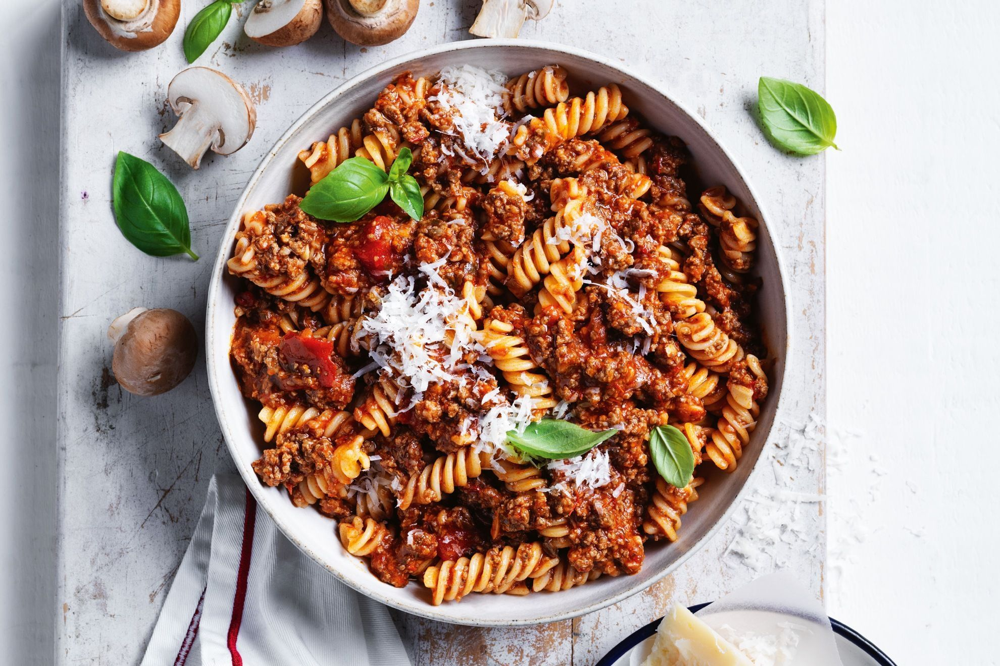

Bolognese

Description
My kids loved it. I followed it exactly except I didn't have any celery to add. It was simple to make, lots of flavor and fed my family of 5 with a pound of pasta and a little leftover for lunch tomorrow. We will be making this again.
Good flavor but as others have done, adding garlic would give it a little more flavor.
Ingredients
- 1 pound lean ground beef
- 3 ounces bacon, chopped
- 1 cup chopped onion
- ½ cup sliced celery
- ½ cup chopped carrots
- ½ cup COLLEGE INN® Fat Free & Lower Sodium Beef Broth, or red or white wine
- 1 (28 ounce) can CONTADINA® Crushed Tomatoes
- ¾ cup whole milk
Steps
- Brown beef, bacon, onion, celery and carrots in a large saucepan over medium-high heat until browned and crisp, about 10 minutes.
- Add broth; simmer until evaporated, scraping browned bits from bottom of pan.
- Stir in tomatoes and milk. Simmer over medium-low heat until sauce is thickened, about 15 minutes. Serve over pasta.